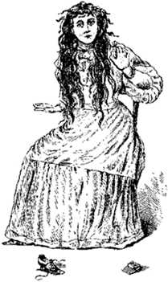

En 1817 dans le Tennessee, la famille Bell, des fermiers prospères.
La maison est plagued with knocking and rapping noises and scratching sounds. Blankets were pulled from beds, family members were kicked and scratched and their hair pulled. Particularly tormented was a 12-year-old Betsy Bell, who was slapped, pinched, bruised and stuck with pins. At first, John Bell was determined to keep the events secret, but soon confided in a friend , who then formed an investigative committee. John Bell's friends soon learned that the strange force in the house had an eerie intelligence. It soon found a voice and from that day on. . .was seldom silent.
The spirit identified itself as the "witch" of Kate Batts, a neighbors of the Bell's, with whom John had experienced bad business dealings over some purchased slaves. "Kate" as the local people began calling her, made daily appearances in the Bell home, wreaking havoc on everyone there. People all over the area of soon learned of the witch and she made appearances, in sounds and voices, all over Robertson County.
The ghost became so famous that even General Andrew Jackson decided to visit. He too experienced the antics of the witch and his carriage wheels refused to turn until the witch decided to let them.
John Bell fell victim to bouts of strange illness, to which "Kate" claimed responsibility. While he was sick in bed, the spirit cursed and prodded him, never allowing him to rest. One day, he went to bed and never recovered. He was found senseless in his bed one morning and a strange bottle was found nearby. Bell's breath smelled of the black liquid in the bottle, so a drop of it was placed on the tongue of a cat. . .the animal dropped dead. John Bell soon followed suit and "Kate" screamed in triumph. She even made her presence known at his funeral, laughing, cursing and singing as the poor man was buried.
"Kate" didn't vanish immediately after the death of her proclaimed enemy though. She stayed around, threatening Betsy Bell to not marry the man that she truly loved, Joshua Gardner. The witch would never say why, but she did allow the girl to later marry the local schoolteacher, Richard Powell. "Kate" soon left the family but promised to return in seven years. She did come back and plagued the family again for two weeks. Before departing, she appeared at the home of John Bell Jr. and made a number of predictions that Bell recorded. The warning proved true, reflecting the Civil War and the later World Wars of the next century. "Kate" said that she would return again 107 years later, in 1935, but the year came and went without incident.
Who was the Bell Witch? Was she really a ghost, who claimed to be connected to a living person? Or did the resentment and the hatred of the real Kate Batts create an entity of it's own? Or could the haunting have been poltergeist activity linked to Betsy Bell? No one will ever know for sure. . .but whoever, or whatever, the Bell Witch was, many believe that she has never left Adams, Tennessee at all.
THE BELL WITCH CAVE
The sinister Bell Witch Cave lies hidden on
the side of a bluff on the former property of the
fated John
Bell family
Located near where the Bell Farm once stood and near the old family cemetery, where many of the Bell's still rest, is what has become known as the Bell Witch Cave. The cave has no real connection to the legend of the witch but it is located on property once owned by the Bell family. Many in Robertson County believe that when the witch departed, she fled to the sanctuary of this cave. Whether the Bell Witch is here or not.... the cave is a very haunted place.
The former owner of the cave, a man named Bill Edens reported that strange events still went on in the cave and near the home that he had built on the bluff where the cave can be found. The steep incline over the Red River hides a narrow path that leads down to the cave. Strange figures have been reported here and knocking sounds and poltergeist-like events still take place in the house.
The current owners, Chris and Walter Kirby, still open the cave for tourists and they too report that eerie events sometimes take place in the house and in the cave itself. Chris Kirby recalls several occasions when she and visitors in the cave have seen strange apparitions and have heard unexplained sounds, coming from deep in the hidden corners of the cave.